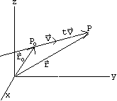

Equazione della retta
Mediante il calcolo vettoriale è semplice scrivere in un dato sistema di riferimento, vari tipi di equazioni per rette e piani.
Una retta nello spazio è individuata da:
un punto e un vettore direzionale
due punti
due piano non paralleli di cui è intersezione
Cominciamo col punto a). Consideriamo un punto P0 = (x0,y0,z0) ed vettore v = (a,b,c) non nullo; ci proponiamo di scrivere l'equazione della retta passante per P0, parallela a v.
Dalla figura si evince che un generico punto P = (x,y,z), corrente sulla retta, si trova aggiungendo al vettore posizione r0 = OP un opportuno multiplo tv di v. Abbiamo quindi per il vettore posizione r = OP del generico punto sulla retta:
r = r0 + t v t ∈ ℝ (1.0)
che prende il nome di equazione parametrica vettoriale della retta; t è una "coordinata" sulla retta corrispondente alla scelta di P0 come origine. Le equazioni parametriche scalari si ricavano dalla 1.0 srivendo componente per component
by varying the parameter t in ℝ, the point x,y,z moves along the line. If a ≠ 0, b ≠ 0, c ≠ 0 si troverebbe
(x − x0)/a = t (y-y0)/b = t (z − z0)/a = t
ossia
(x − x0)/a = (y − y0)/b = (z − z0)/a
che sono le equazioni cartesiane della retta.
Nel caso in cui a2 + b2 + c2 = 1, cioè nel caso in cui v è un versore, i numeri a,b,c prendono il nome di coseni della retta, in quando rappresentano i coseni degli angoli che la retta forma con ciascuno degli assi coordinati.